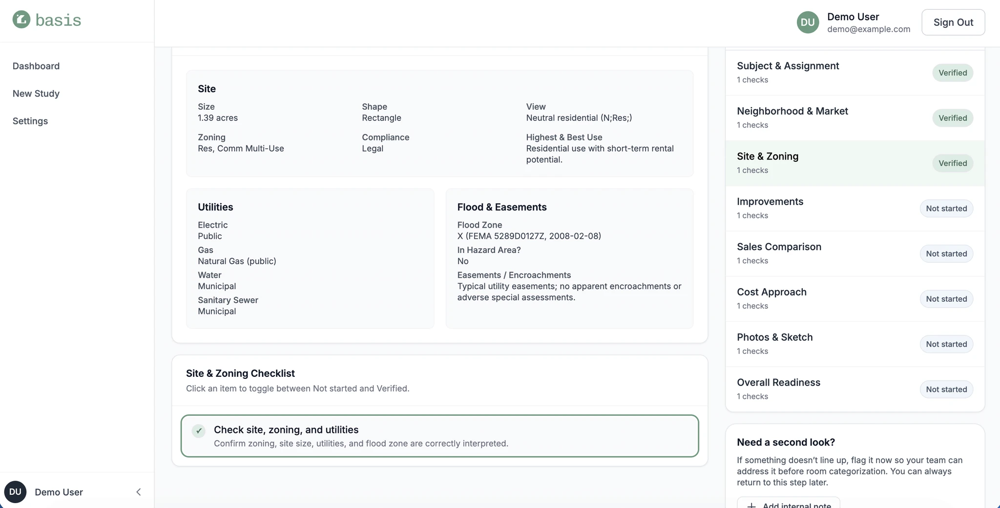
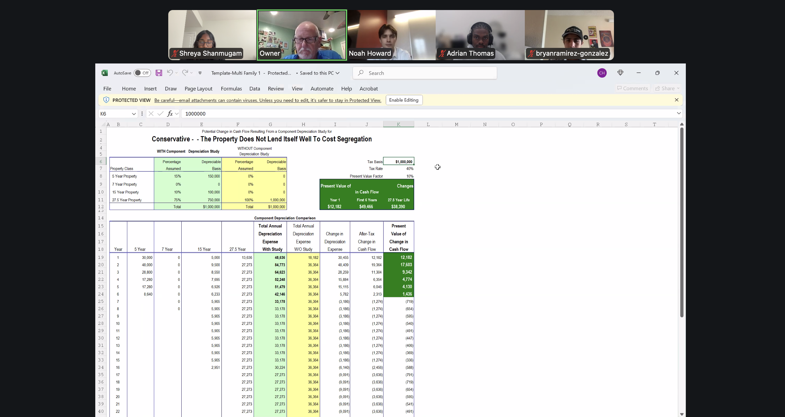
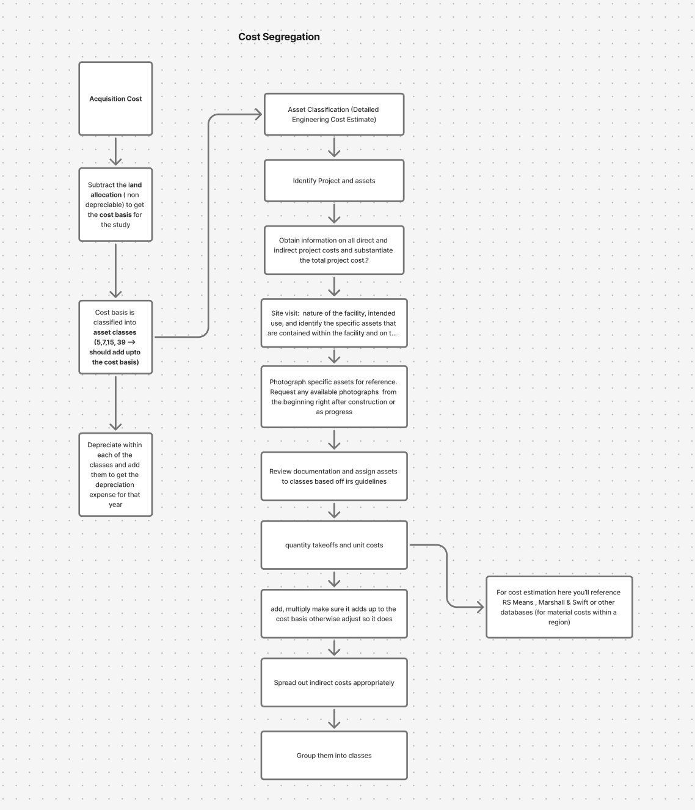
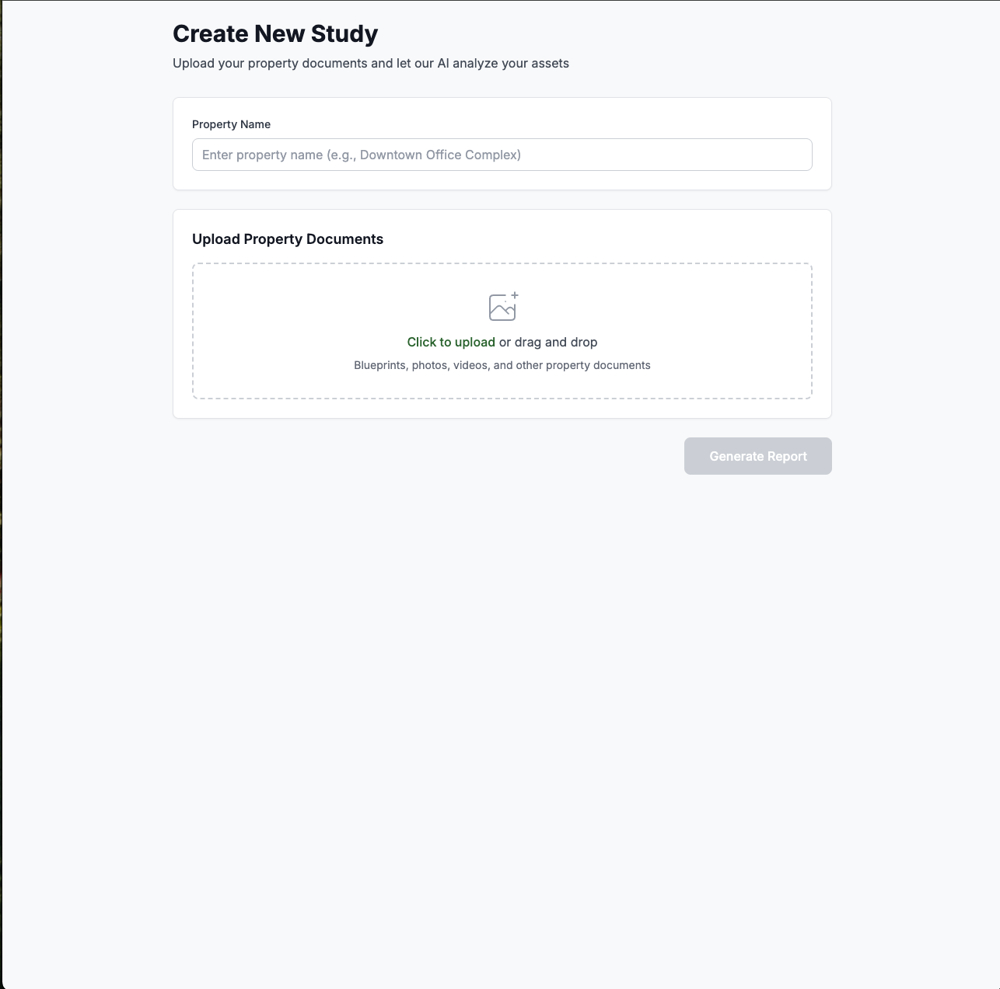
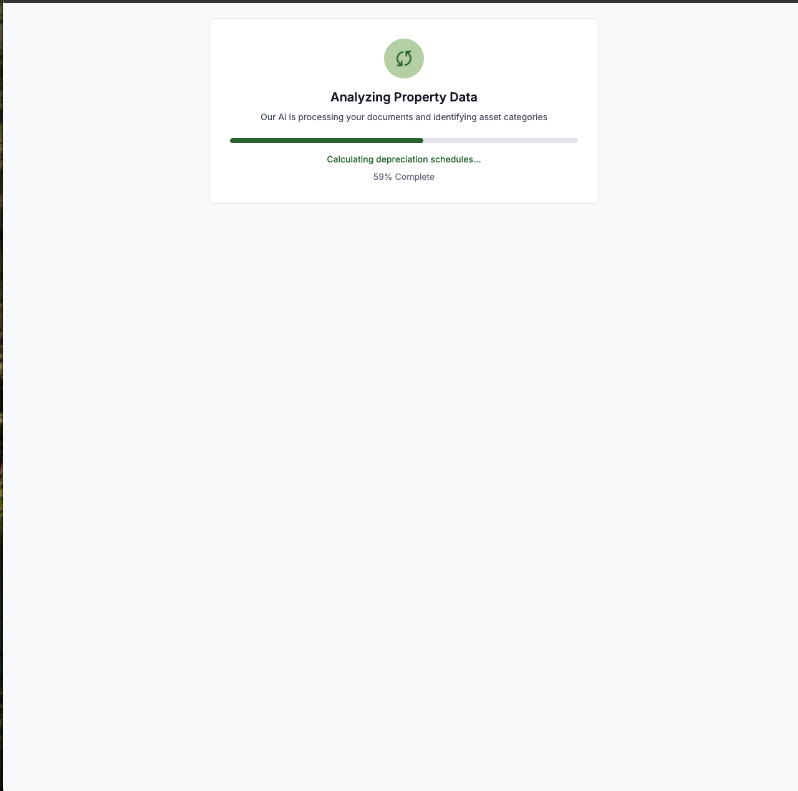
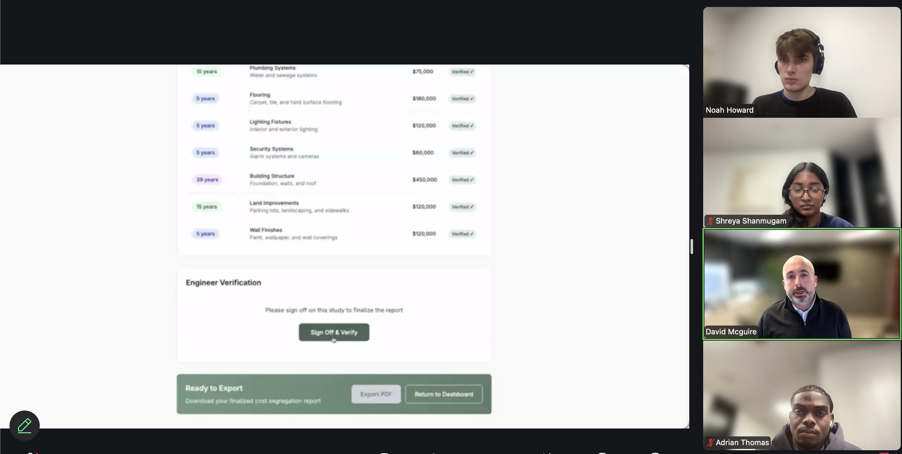
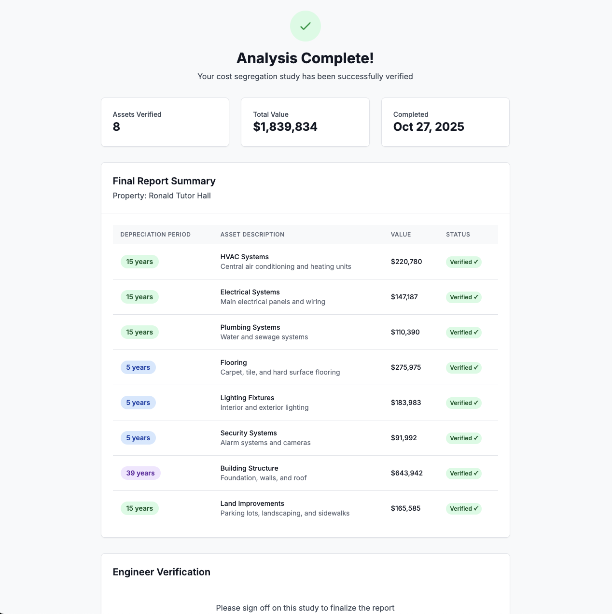
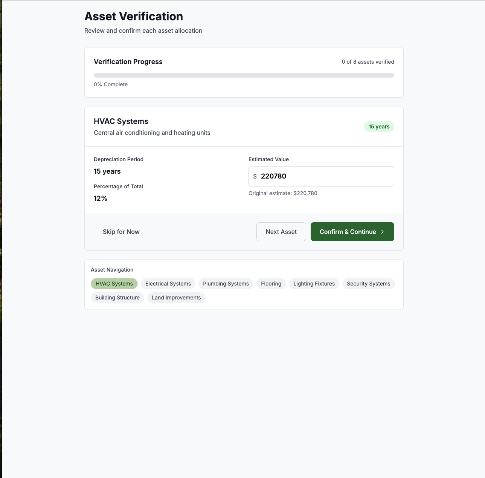
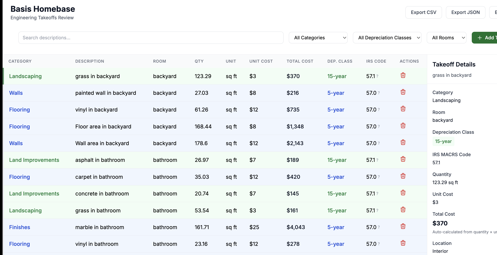

Context
Thinking as a co-founder first and designer second
As part of the startup incubator LavaLab, my co-founders and I were tasked with identifying a problem space and building a business venture within ten weeks.
One of my co-founder’s parents worked in the cost segregation industry, which gave us direct insight into this problem area.
Outcomes
- Validated problem through 15+ user interviews To build a holistic view of the problem.
- Signed testing with 4 partners Including larger firms in the industry such as CSSI.
- Best Traction Award LavaLab F25 Industry Pitch Competition.
Solution
Cost segregation studies are slow, expensive, and heavily manual
Professionals must cross-reference multiple ambiguous documents with no standardized input structure, leaving much of the analysis to estimation. As a result, a single residential study typically costs around $1,200 and can take 2-3 weeks to complete.


Presenting: Basis
We reduced manual work behind cost segregation by using AI to analyze property documents and generate structured asset classifications.
Our product is built for cost segregation engineers in small to medium firms targeting residential studies. With a shrinking talent pipeline in the industry, new AI capabilities create an opportunity to automate their most time-intensive tasks.

Human-in-the-loop workflows
Because cost segregation relies on professional judgment, Basis was designed with review, override, and approval checkpoints.

Cross-referencing in one place
Engineers previously switched between photos, appraisals, sketches, and notes to validate a single decision. Basis brings these documents into one interface.

Automating redundant tasks
Basis automates repetitive tasks like extracting information, classifying rooms and organizing evidence so engineers can focus on higher-value judgment calls.
Process
Starting with what we didn’t know
None of us had a background in cost segregation. Before designing anything, we had to become fluent in how the industry actually worked - the stages, the stakeholders, the regulations, and where professionals spent their time.
We interviewed almost every person in the workflow: retired cost segregation specialists, practicing engineers, people whose full-time job is organizing property photos, sales leaders, podcast hosts for the industry, and CEOs of both small-to-medium and medium-to-large firms. We even interviewed construction engineers when cost segregation specialists were hard to find - their perspective helped us understand the broader physical context of what was being analyzed.
One thing that surprised us early: there are people whose entire job is sitting and manually organizing property photos and matching them to asset classifications. We assumed this was something that could be easily automated. We were surprised it hadn’t been already.


Research in the room
Our first assumption was wrong
Before talking to enough users, we built our first prototype around a simple assumption: upload the documents, and AI generates a complete cost segregation report. No human involvement needed.
V1 - first assumption



Upload documents → AI generates full report. No human in the loop.
Where it broke

When we showed this to a company owner in the space, their response was immediate: “It doesn’t work like that.” Cost segregation requires professional judgment on factors AI can’t assess - the state the property is in, its age, local tax code nuances, and dozens of small decisions that only experienced engineers can make. Technically, a license is required to sign off on a cost segregation study. AI cannot do that.
This wasn’t a small pivot. It meant rethinking the entire information architecture from scratch.
Finding the right balance
We didn’t swing to fully manual - we kept leaning on AI but had to add more and more human checkpoints as we learned where the gaps were. Each round of testing with real users revealed another step that required professional judgment, and we built around those moments rather than trying to automate past them.
The turning point came when we realized the core problem wasn’t speed - it was confidence. Engineers needed to be able to trace every AI output back to source documentation and defend it. Faster analysis meant nothing if it couldn’t be verified.
-
V1

Full AI automation
Upload documents, AI generates complete report. We showed it to a practicing specialist in the industry—immediately invalidated. The workflow has too many judgment calls for AI to handle alone.
-
V2

Adding human checkpoints
Introduced review and override steps after AI analysis. Engineers could adjust values and flag issues. Still too AI-dependent in the classification phase.
-
V3

Cross-referencing in one place
Brought source documents - photos, appraisals, floor plans - into the same interface as the AI output. Engineers could now verify classifications without switching between tools.
-
Final
Human-in-the-loop throughout
Review, override, and sign-off checkpoints at every major stage. AI handles extraction and classification; engineers handle judgment, verification, and final approval.
Impact
Shipping my first product as a founding designer
In just six weeks, we launched the first version of Basis and validated demand for AI-assisted cost segregation tools. Early traction and industry feedback led to Best Traction at LavaLab’s Fall 2025 Industry Pitch Competition.


Key takeaways
Design around a moment of need
The most meaningful impact came from focusing on the exact moment engineers lose confidence- when analysis outputs need to be validated and defended. Designing around that moment clarified what actually mattered and what didn’t.
Ship fast and iterate faster
We went through four meaningful versions of Basis in six weeks — not because we planned to, but because each round of testing with real users broke an assumption we’d built the previous version around. V1 assumed AI could do everything. It couldn’t. V2 added human checkpoints but still leaned too hard on automation. V3 brought documents and AI output into the same view. Each version wasn’t a failure — it was the research. The jump from V1 to final wasn’t a leap, it was a series of small, forced corrections. That’s what fast iteration actually looks like.
The details you overlook are the ones that matter most
I spent two weeks on branding alone and still almost got it wrong. Typography shapes a product’s credibility more than I expected — a font choice that feels neutral in isolation can make a B2B tool look untrustworthy to the exact people you’re trying to sell to. I also learned that opacity does more quiet work than adding new colors ever could, and that Figma’s auto layout is a high-fidelity tool — forcing it into lo-fi exploration doesn’t make your wireframes better, it just slows you down and adds constraints before you’re ready for them.
More case studies